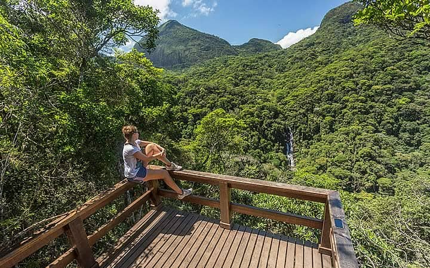
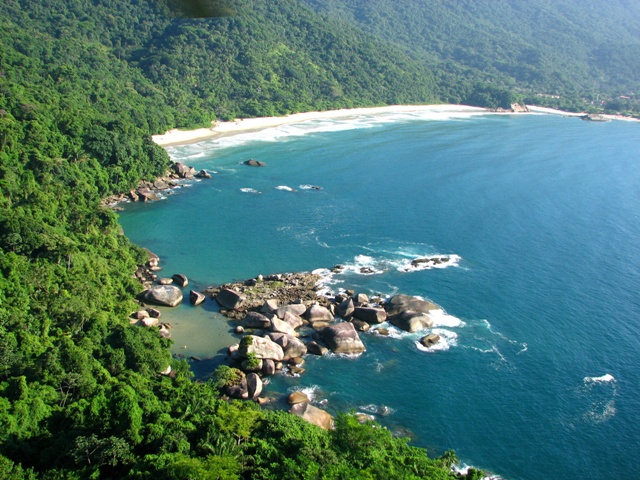
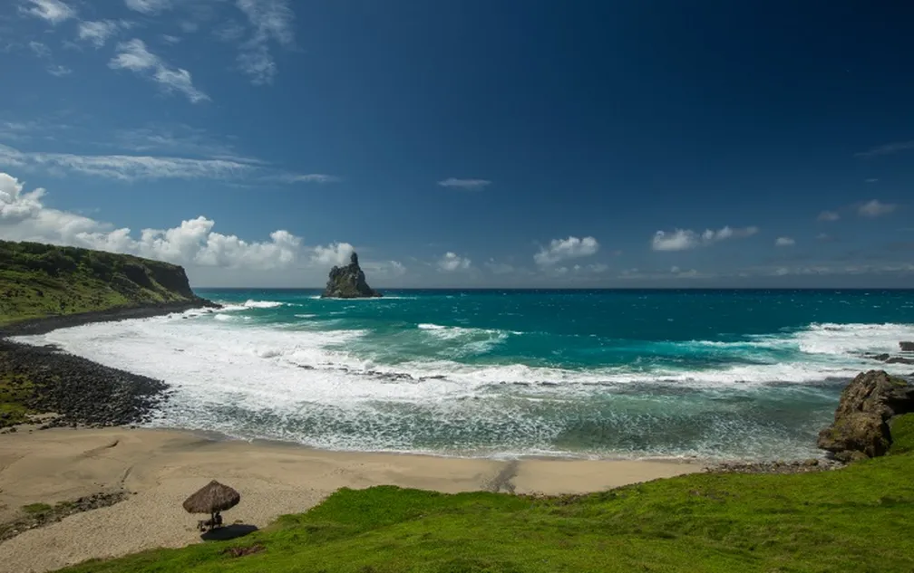
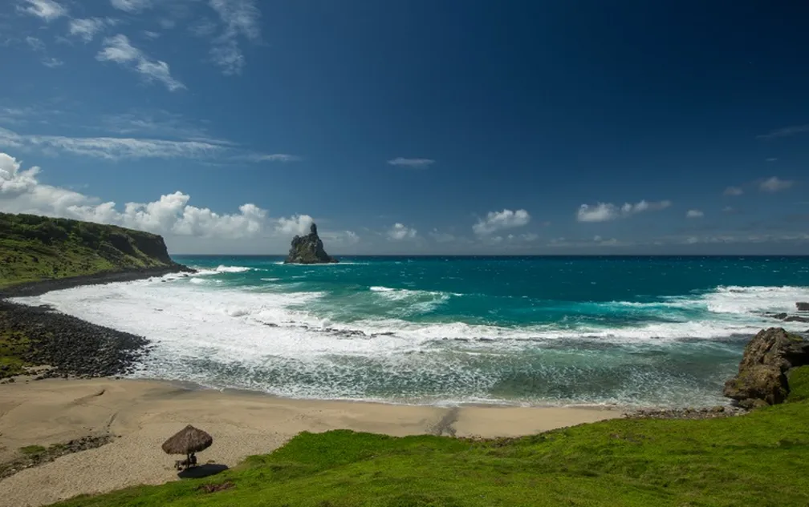
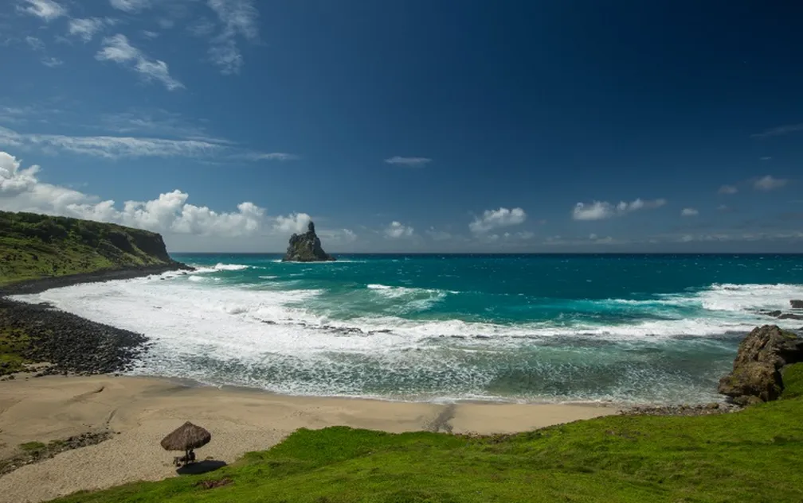

Encante-se com a magia dos parques
nacionais do Brasil
Os cinco parques nacionais mais conhecidos permitem a você
conhecer a diversidade natural do Brasil, uma experiência imperdível
para os amantes da natureza
Desperte em você um profundo apreço pela
beleza e pela importância da nossa flora e
fauna, enquanto você mergulha nas riquezas
que esses parques têm a oferecer!



Mergulhe na natureza ao explorar a exuberância dos Parques Nacionais Brasileiros! O
Brasil é lar de uma biodiversidade sem igual, convida você a se aventurar em seus
Parques Nacionais, santuários que guardam tesouros naturais de tirar o fôlego. Entre
em contato com a natureza exuberante, explore florestas impenetráveis, admire
cachoeiras majestosas e deixe-se encantar por praias de águas cristalinas.
Em 2022, mais de 21,6 milhões de visitantes embarcaram nessa
jornada inesquecível, explorando 137 unidades de conservação
espalhadas por todo o país. Neste post,
Os parques nacionais são espaços de preservação que guardam algumas das
paisagens naturais mais bonitas do país
revelamos para você quais são os cinco
Parques Nacionais mais visitados do Brasil,
convidando-o a desvendar seus encantos e
se conectar com a natureza em sua forma
mais pura.
Nossos parques possuem uma
biodiversidade de espécies nativas e uma imensidão de florestas
exuberantes, cachoeiras imperdíveis e praias de águas cristalinas. O Brasil
testemunhou o interesse renovado por quem busca uma conexão maior com
a natureza, conhecendo parques nacionais que protegem as florestas,
cânions, cavernas, variadas plantas e animais, além de paisagens
inesquecíveis.

 
